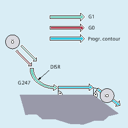

The SAR (Smooth Approach and Retraction) function is used to achieve a tangential approach to the start point of a contour, regardless of the position of the start point.
This function is used preferably in conjunction with the tool radius compensation.
When the function is activated, the control calculates the intermediate points in such a way that the transition to the following block (or the transition from previous block during retraction) is performed in accordance with the specified parameters.
The approach movement consists of a maximum of four sub-movements. The starting point of the movement is called P0, the end point P4 in the following. Up to three intermediate points P1, P2 and P3 can be between these points. Points P0, P3 and P4 are always defined. Intermediate points P1 and P2 can be omitted, according to the parameters defined and the geometrical conditions. On retraction, the points are traversed in the reverse direction, i.e. starting at P4 and ending at P0.
With a straight line:
G147 G340/G341 ... DISR=..., DISCL=..., DISRP=... FAD=...
With a quadrant/semicircle:
G247/G347 G340/G341 G140/G141/G142/G143 ... DISR=... DISCL=... DISRP=... FAD=...
With a straight line:
G148 G340/G341 ... DISR=..., DISCL=..., DISRP=... FAD=...
With a quadrant/semicircle:
G248/G348 G340/G341 G140/G141/G142/G143 ... DISR=... DISCL=... DISRP=... FAD=...
| Approach with a straight line |
| Retraction with a straight line |
| Approach with a quadrant |
| Retraction with a quadrant |
| Approach with a semicircle |
| Retraction with a semicircle |
| Approach and retraction in space (default setting) |
| Approach and retraction in the plane |
| Approach and retraction direction dependent on the current compensation side (default setting) |
| Approach from the left or retraction to the left |
| Approach from the right or retraction to the right |
| Approach and retraction direction dependent on the relative position of the start or end point to the tangent direction |
|
Notice: |
| Distance of the end point for the fast infeed motion from the machining plane DISCL=AC(...) Specification of the absolute position of the end point for the fast infeed motion |
| Specification of the absolute position of the end point for the fast infeed motion |
| Distance of point P1 (retraction plane) from the machining plane |
| Specification of the absolute position of point P1 |
| Speed of the slow feed movement The programmed value acts in accordance with the active feedrate type (G group 15). |
| The programmed value is interpreted as linear feedrate (like G94) irrespective of the active feedrate type. |
| The programmed value is interpreted as revolutional feedrate (like G95) irrespective of the active feedrate type. |
Smooth approach (block N20 activated)
Approach with quadrant (G247)
Approach direction not programmed, G140 applies, i.e. TRC is active (G41)
Contour offset OFFN=5 (N10)
Current tool radius=10, and so the effective compensation radius for TRC=15, the radius of the SAR contour =25, with the result that the radius of the tool center path is equal to DISR=10
The end point of the circle is obtained from N30, since only the Z position is programmed in N20
Infeed movement
From Z20 to Z7 (DISCL=AC(7)) with rapid traverse.
Then to Z0 with FAD=200.
Approach circle in X-Y-plane and following blocks with F1500 (for this velocity to take effect in the following blocks, the active G0 in N30 must be overwritten with G1, otherwise the contour would be machined further with G0).
Smooth retraction (block N60 activated)
Retraction with quadrant (G248) and helix (G340)
FAD not programmed, since irrelevant for G340
Z=2 in the starting point; Z=8 in the end point, since DISCL=6
When DISR=5, the radius of the SAR contour=20, the radius of the tool center point path=5
Retraction movements from Z8 to Z20 and the movement parallel to the X-Y plane to X70 Y0.
| Program code | Comment |
|---|---|
| $TC_DP1[1,1]=120 | ;Tool definition T1/D1 |
| $TC_DP6[1,1]=10 | ; Radius |
| N10 G0 X0 Y0 Z20 G64 D1 T1 OFFN=5 | ; (P0 app) |
| N20 G41 G247 G341 Z0 DISCL=AC(7) DISR=10 F1500 FAD=200 | ; Approach (P3 app) |
| N30 G1 X30 Y-10 | ; (P4 app) |
| N40 X40 Z2 | |
| N50 X50 | ; (P4 ret) |
| N60 G248 G340 X70 Y0 Z20 DISCL=6 DISR=5 G40 F10000 | ; Retraction (P3 ret) |
| N70 X80 Y0 | ; (P0 ret) |
| N80 M30 |
See also:
Soft approach and retraction (G140 to G143, G147, G148, G247, G248, G347, G348, G340, G341, DISR, DISCL, DISRP, FAD, PM, PR): More information
Soft approach and retraction with extended retraction strategies (G460, G461, G462):